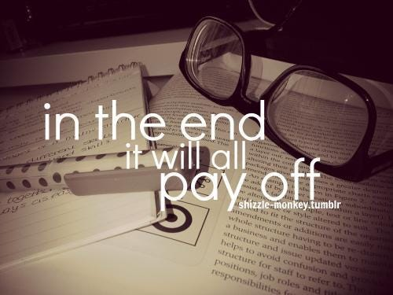

Being new to web design, I embarked on a journey of discovery, learning how to craft a fully functional webpage from scratch, one that I could further refine and customize using CSS. Starting with the basics, I familiarized myself with HTML structure and syntax, understanding the fundamental building blocks of the web. With each line of code written, I felt a sense of accomplishment, as my blank canvas transformed into a living, breathing digital space. Through trial and error, I honed my skills, mastering the art of positioning elements, styling text, and creating responsive layouts. As I progressed, the intricacies of CSS became clearer, empowering me to mold my webpage into a reflection of my vision and creativity.
As I reached a level of proficiency in web design, I realized the vast potential offered by frameworks like Bootstrap to streamline development and enhance user experience. With more time at my disposal, I yearned to delve deeper into Bootstrap, unraveling its myriad features and functionalities. I envisioned harnessing its grid system to effortlessly achieve responsive designs across various devices, from desktops to smartphones. Additionally, I aimed to explore Bootstrap's extensive library of components, leveraging its pre-styled elements to expedite development without compromising on aesthetics or functionality. By embracing Bootstrap, I aspired to elevate my web design repertoire, seamlessly integrating cutting-edge techniques and best practices into my projects.
Armed with a newfound understanding of web design principles, I embarked on the creative journey of selecting colors for my webpage, relying on intuition and instinct to guide me through this artistic process. Each hue and shade I chose was a reflection of my personality and design sensibilities, imbuing my webpage with a unique visual identity. Drawing inspiration from nature, art, and everyday life, I curated a harmonious color palette that evoked the desired mood and atmosphere. Though subjective, my color choices were deliberate, each serving a purpose in enhancing readability, guiding user attention, and fostering emotional engagement. With each stroke of color applied, my webpage came alive, captivating visitors and leaving a lasting impression long after they departed
